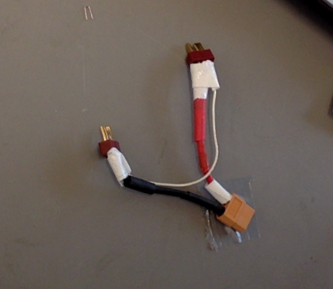
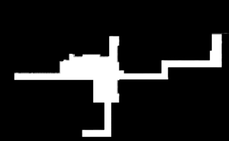
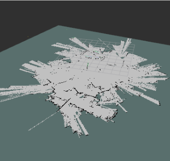
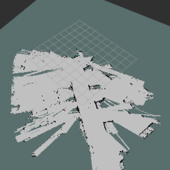
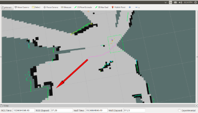
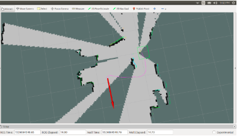
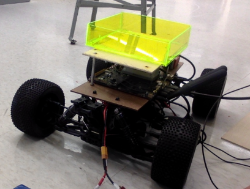

Description
TJNav is a project by Yuki Oyama and Ethan Liu at the Thomas Jefferson High School for Science and Technology Robotics Lab. The goal of our project is to create an indoor navigation robot that is capable of guiding a user to any room within the building at TJ. While this project is specific to our building, given any map of any building, it should be able to navigate just as well.Details
The project consists of two-stages. Stage one consists of the robot's localization ability. To address the problem of localization, we utilized LIDAR sensor data for error correction and IMU & VESC Motor Controller Odometry data. We feed this data into an Adaptive Monte Carlo Algorithm in order to create a probability density function to determine the most likely postition of the robot at each time frame. Stage two consists of the robot's navigation ability. To accomplish navigation throughout the TJHSST building, we implement the A-star Algorithm using distance heuristics to determine the shortest path a robot must traverse—the rooms represent nodes of the graph.Code
Local_costmap_parameters.txt: Updated 5/12
local_costmap:
global_frame: odom
robot_base_frame: base_link
update_frequency: 2.0
publish_frequency: 2.0
static_map: false
rolling_window: true
width: 6.0
height: 6.0
resolution: 0.01
controller_frequency: 2.0
global_costmap:
global_frame: /map
robot_base_frame: base_link
update_frequency: 2.0
static_map: true
obstacle_range: 10.0
raytrace_range: 12.0
footprint: [[-0.22, 0.26], [0.22, 0.26], [0.22, -0.26], [-0.22, -0.26]]
inflation_radius: 0.5
observation_sources: laser_scan_sensor
laser_scan_sensor: {sensor_frame: laser, data_type: LaserScan, topic: scan, marking: true, clearing: true}
Components
Logs
11/1:Finished soldering battery connector circuit. Project order forms complete for XT60 connectors/Acrylic for chassis.11/14:Finished creating computer aided design for new electronics board panel (see photo1 galery)
11/30:XT60 Order Confirmation from Amazon
12//3: Robot moved upon connection w/ battery connector with 2 3000mAh Batteries in series
12/13: Tested Jetson by booting via direct power source (not in robot circuit)
2/10: Develop code for pathfinding (python script to be run in launch file)
2/14: Resoldered battery connector using XT60 Connectors
 4/14: Created Map of School for area near Robotics Lab
 4/16: Created yml file for our specific map to tell robot dimensions of pixel/meter ratio
4/22: Successfully ran teleop program and began running robot around without HDMI connection by SSHing to the robot
5/1: Tested the SLAM mapping ability of robot.

An example of when the robot moves at 4m/s. Map is extremely faulty and completely disoriented.

An example of when the robot moves at 1m/s with pauses every 2 seconds. Map of same area is much more defined.
5/12: Developed move base code and various configuration files (which can be seen in the code section). Able to navigate with relative accuracy from point A to B. Obstacle avoidance also worked as shown in images below.
  5/16: Developed hardware to attach on robot, allowing it to carry materials.  5/18: Updated schematic